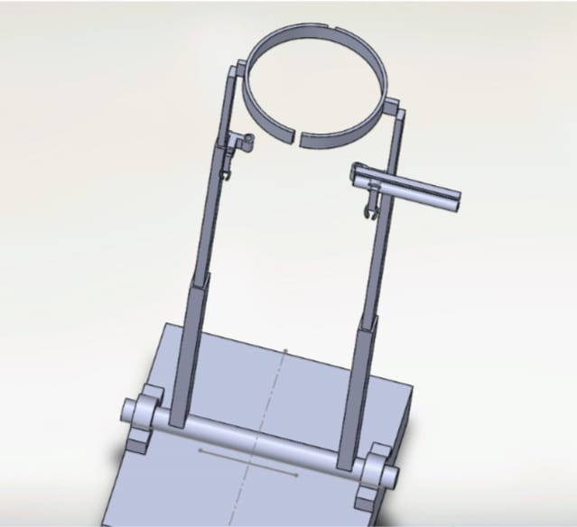
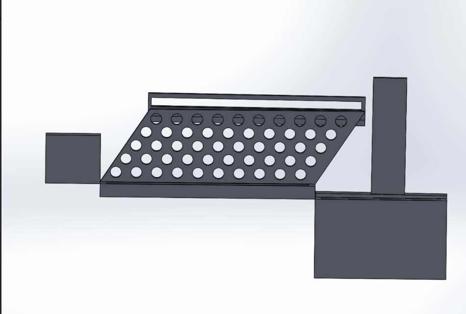

Passionate AI & Data Science student focused on building innovative solutions in agriculture, healthcare, automation, and intelligent systems.
Startup Funding
Major Projects
Hackathons
Career Goal
I am currently pursuing B.Tech in Artificial Intelligence and Data Science at Kongu Engineering College. My interests include Artificial Intelligence, Machine Learning, Product Development, Startup Innovation, Automation Systems, and Smart Agriculture. I enjoy building impactful solutions that solve real-world problems through technology. My long-term vision is to become an AI Product Manager and lead the development of innovative AI-driven products.

The Automatic Banana Bagging System is an innovative agricultural
automation solution developed to address one of the major challenges
in banana cultivation: labor-intensive bunch covering. Traditional
banana bagging requires significant manual effort, leading to higher
labor costs, inconsistent coverage, and reduced efficiency.
This project introduces an automated mechanism capable of covering
banana bunches with biodegradable protective bags during the
pre-harvest stage. The system is designed to improve operational
efficiency while ensuring uniform bagging across large plantations.
The protective covering helps safeguard banana fruits from insect
attacks, fungal infections, dust contamination, bird damage, sunburn,
and harsh environmental conditions. By maintaining fruit quality and
reducing crop losses, the solution aims to improve market value and
farmer profitability.
The project was recognized for its practical impact and innovation,
receiving startup funding support of approximately ₹75,000. The long-
term vision is to transform the prototype into a scalable smart
agriculture product that can be deployed across commercial banana
farms.
Key Features:
✔ Automated bunch covering mechanism
✔ Reduced labor dependency
✔ Protection against pests and diseases
✔ Biodegradable and eco-friendly approach
✔ Improved fruit quality and yield

The Advanced Flood Management System is a smart disaster-prevention
and monitoring platform designed to improve flood preparedness and
response. Floods often result in severe damage to infrastructure,
property, agriculture, and human life due to the lack of timely
warnings and real-time monitoring systems.
This project focuses on collecting environmental and water-level data
through intelligent sensing and monitoring technologies. The system
continuously analyzes critical parameters and generates alerts when
potential flood risks are detected.
By providing early warnings and real-time situational awareness, the
solution assists local authorities, disaster-management teams, and
communities in making informed decisions during emergency situations.
The system aims to reduce flood-related damages and improve public
safety through technology-driven intervention.
The project demonstrated strong innovation potential and practical
applicability, winning a Mini Hackathon and securing a cash prize of
₹5,000.
Key Features:
✔ Real-time flood monitoring
✔ Early warning and alert generation
✔ Disaster risk assessment support
✔ Community safety enhancement
✔ Smart environmental monitoring
The AI-Based Jaundice Detection System is a healthcare innovation
developed to provide affordable, accessible, and non-invasive
screening for jaundice. Conventional jaundice diagnosis often relies
on laboratory testing, which may not be readily available in rural
or resource-constrained regions.
This project combines artificial intelligence, embedded systems, and
IoT technologies to create a low-cost screening solution. Using an
ESP32 microcontroller, optical sensing techniques, and intelligent
analysis algorithms, the system evaluates visual indicators commonly
associated with jaundice.
The objective is to enable early detection and preliminary screening,
allowing individuals to seek medical attention at an earlier stage.
The solution is particularly aimed at improving healthcare access in
remote communities where diagnostic facilities may be limited.
By integrating AI-driven analysis with portable hardware, the project
demonstrates the potential of technology to make healthcare more
efficient, affordable, and widely accessible.
Key Features:
✔ AI-assisted jaundice screening
✔ ESP32-based embedded system
✔ Affordable and portable design
✔ Early detection support
✔ Rural healthcare accessibility
Started B.Tech AI & DS
Mini Hackathon Winner
Startup Funding Received
AI Product Manager
Won Mini Hackathon and secured ₹5,000 cash prize.
Received ₹75,000 support for startup development.
Finalist in Aryabhatta Mathematics Competition.
Founder of Automatic Banana Bagging System.
Deep Learning Certification
Affective Communication
Native
Professional
Basic Communication